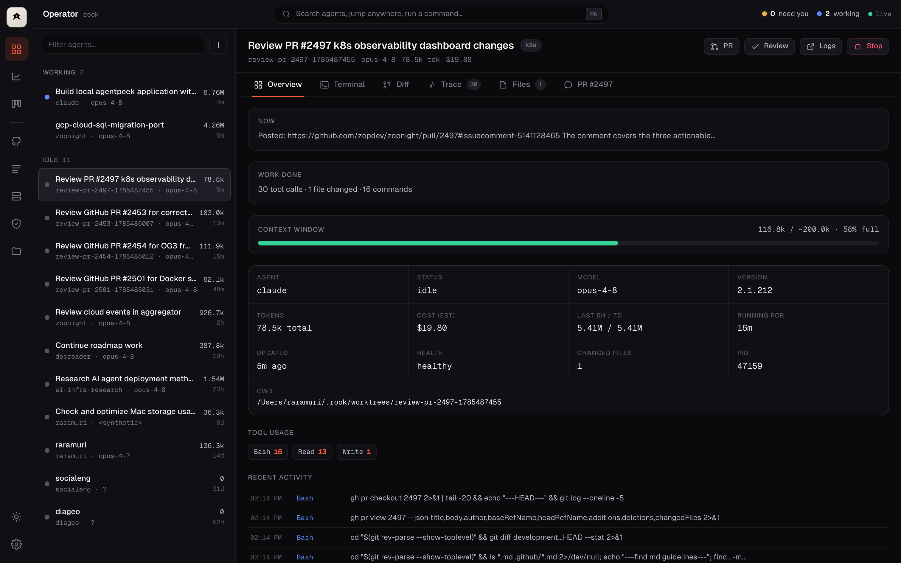
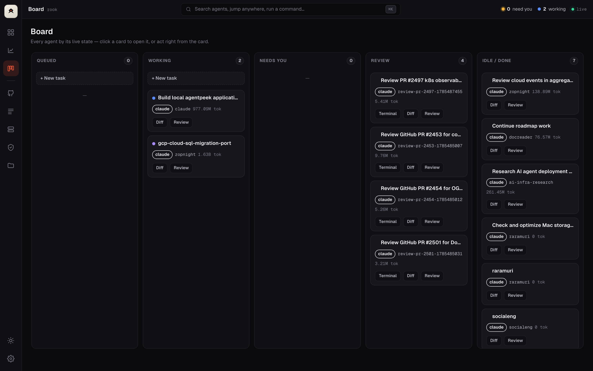
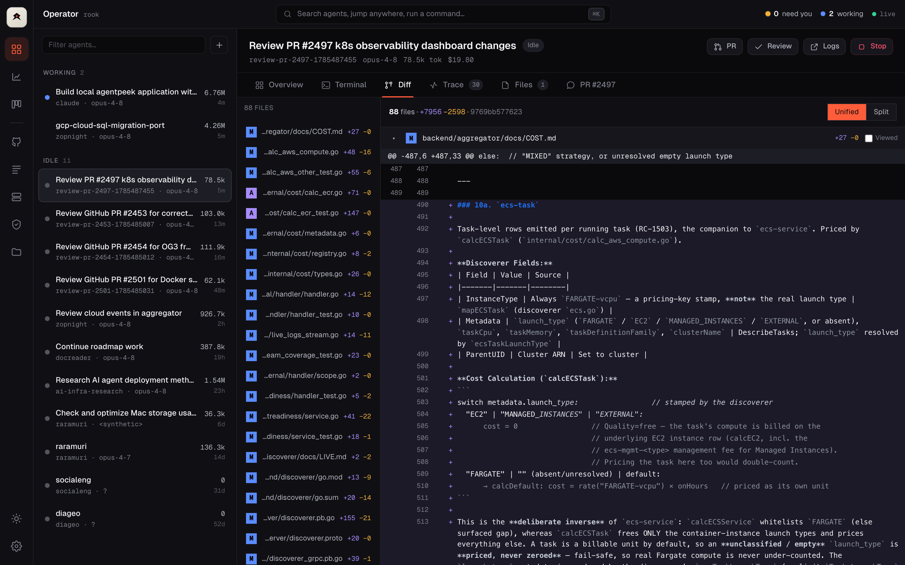
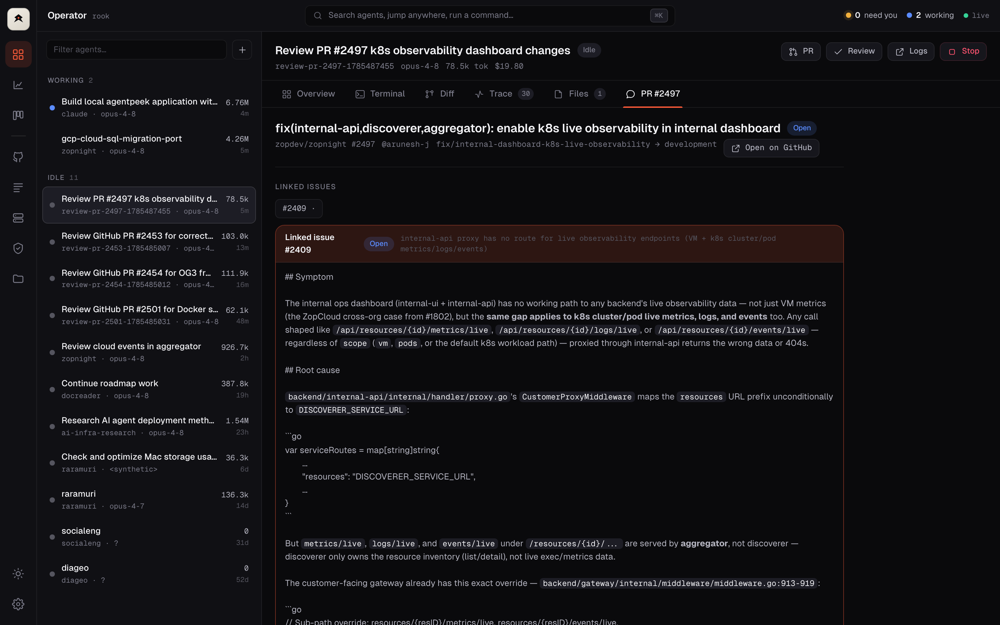
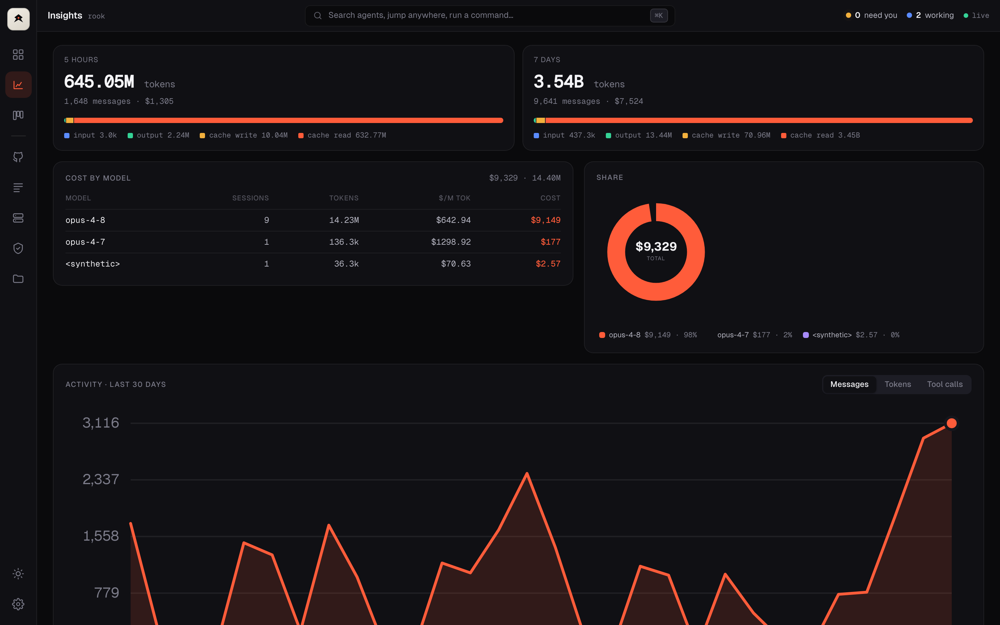

rook discovers, launches, watches, and drives your coding agents — Claude Code, Codex, Aider & Gemini — from a single local dashboard. See what each is doing, review its diff, and steer it without hunting through terminal tabs.

A live roster that triages for you — who's blocked, who's looping, who's done — in plain English, with a desktop or phone ping the second one needs you.

Read the canonical PR diff in-app, drop a comment on any line, and rook types it straight into the agent's session as a tracked thread. No copy-paste, no lost context.

For any review agent, see the PR's description, commits, linked issues, reviews, and comments — pulled live from GitHub, right beside the diff.

Per-model and per-project cost, 5-hour and 7-day windows, a 30-day activity trend, and a quality score per run — so you can see which agents are worth it.

$ curl -fsSL overclockhq.github.io/\ rook/install.sh | sh $ rook
$ brew install \ overclockhq/tap/rook $ rook
$ go install github.com/\ overclockhq/rook/cmd/rook@latest $ rook
rook opens your browser automatically · install tmux to drive agents · gh for GitHub features